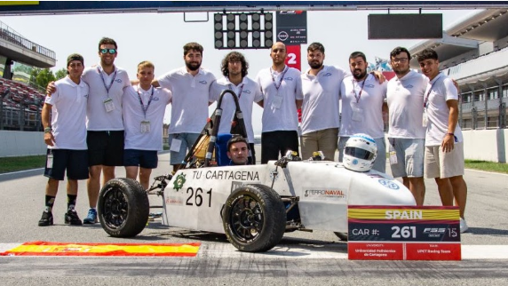
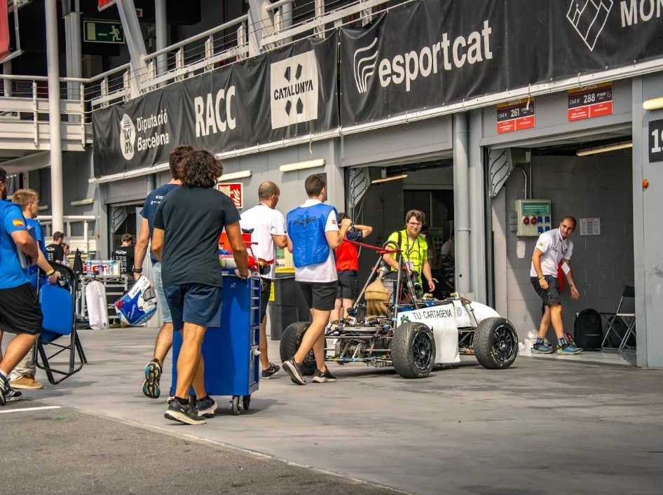
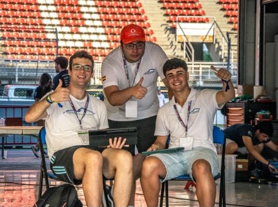
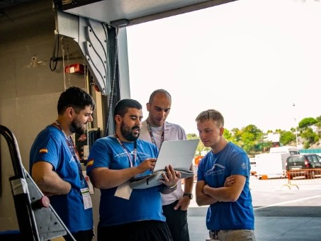

Quiénes somos
Somos el equipo de Formula Student de la Universidad Politécnica de Cartagena: estudiantes que diseñan, construyen y compiten con un monoplaza.
Un equipo,
un coche
El UPCT Racing Team es el equipo de Formula Student de la Universidad Politécnica de Cartagena: un grupo de estudiantes que diseña, fabrica y pone a punto un monoplaza de carreras para competir con otras universidades.
Formula Student es mucho más que correr: es aprender ingeniería haciéndola. Cada integrante aporta desde su área —aerodinámica, chasis, eléctrica, marketing…— y todos empujamos hacia un mismo objetivo: un coche competitivo, fiable y bien defendido ante los jueces.
Nos mueve la pasión por el motorsport, el trabajo en equipo y las ganas de demostrar lo que hemos aprendido en el aula.




Nuestra historia
El UPCT Racing Team nació en 2008 en la Escuela Técnica Superior de Ingeniería Industrial de la Universidad Politécnica de Cartagena, con el objetivo de que sus estudiantes diseñaran y construyeran un monoplaza para competir en la Formula Student.
La universidad
La Universidad Politécnica de Cartagena (UPCT) es una universidad pública con sede en Cartagena, en la Región de Murcia. El UPCT Racing Team la representa en Formula Student.
Hitos destacados
-
2008
Nace el equipo
En la Escuela Técnica Superior de Ingeniería Industrial de la UPCT.
-
2010
Silverstone
Primera participación en la categoría de monoplazas: 17.º de 76 en lanzamiento de producto y 26.º en fabricación.
-
2015
Monoplaza eléctrico
Tercer prototipo del equipo y el primero con motorización eléctrica.
-
2019
27.º de unos 100
En Formula Student Spain, con un coche de combustión que pasa de 0 a 100 km/h en 3,2 s.
-
2025
Nuevo monoplaza
Motor de 600 cc y 110 CV, construido por unos 40 estudiantes.
De 2008 a hoy
Cronología
-
2008
Nace el equipo
Nace en la Escuela Técnica Superior de Ingeniería Industrial de la UPCT, con el objetivo de que los estudiantes diseñen y construyan un monoplaza para competir en la Formula Student.
-
2010
Silverstone
Primera participación en la categoría de monoplazas, en el circuito británico de Silverstone, con un coche diseñado y fabricado íntegramente por 22 estudiantes. Queda 17.º de 76 en lanzamiento de producto y 26.º en fabricación, supera las inspecciones técnicas, de seguridad y de ruido y recibe las felicitaciones del jurado.
-
2014
El salto a lo eléctrico
El equipo anuncia que su siguiente coche tendrá por primera vez motor eléctrico y presenta su diseño en 3D con realidad aumentada en la Escuela de Industriales.
-
2015
Estreno de la motorización eléctrica Eléctrico
Presenta en la Escuela de Industriales su tercer prototipo, el primero con motorización eléctrica.
-
2016
Cuarto prototipo Eléctrico
Compite en Formula Student Spain con su cuarto prototipo, el segundo monoplaza eléctrico del equipo, y lo expone después al público en Cartagena.
-
2018
De nuevo en Montmeló Eléctrico
Compite en Montmeló con su tercer monoplaza eléctrico.
-
2019
Un nuevo bólido Combustión
Presenta un nuevo monoplaza de combustión que acelera de 0 a 100 km/h en 3,2 segundos. En Formula Student Spain, en Montmeló, mejora sus resultados anteriores y termina 27.º entre unos 100 equipos.
-
2020–2024
Años de parón
La pandemia y las restricciones de acceso a los talleres frenan al equipo: desde 2019 no compite en Formula Student.
-
2025
Un nuevo monoplaza Combustión
Presenta con realidad aumentada, en la Escuela de Industriales, el monoplaza con el que quiere volver a competir en Montmeló: motor de 600 cc y 110 CV, amortiguadores independientes en cada rueda y un nuevo alerón delantero con pontones encapsulados. Lo construye un equipo de unos 40 estudiantes, la mayoría de Ingeniería Mecánica.
-
2026
Hoy
El UPCT Racing Team figura en la lista oficial de equipos de Formula Student Spain 2026, en Montmeló, y ya prepara Formula Student Spain 2027, en Barcelona.
Cómo trabajamos
Cada área, una pieza del coche
Elige un departamento para ver a las personas que lo forman.